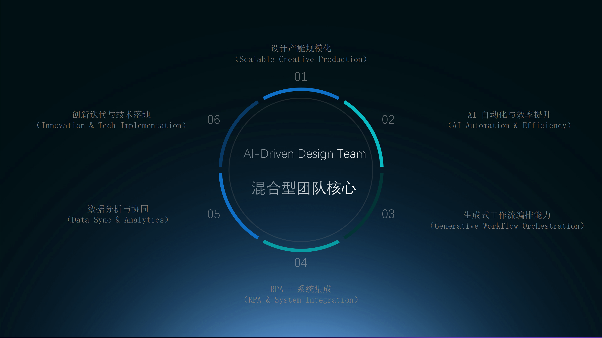
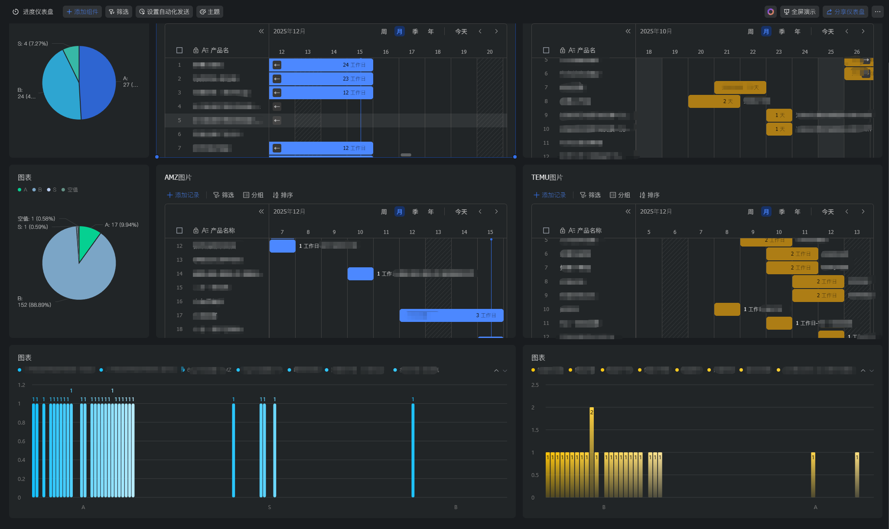

01 · HYBRID OVERVIEW
把“口头沟通”变成“结构化输入”，把“盯人推进”变成“节点状态”，把“灵感创新”变成“可复用资产”。
关于我在做的事
负责构建混合型团队：视觉/品牌、生成式设计、自动化工程、数据分析四个小组并行，角色按照“链路节点”分配。
- Feishu 表单 + API 接入，需求字段化。
- n8n / RPA 编排，节点日志自动记录。
- 交付目录 + Prompt 资产统一管理。
三大目标
- 输出稳定：SLA、返工率、进度透明。
- 流程可控：节点可视化，失败兜底策略。
- 复盘可量化：把结果、时间、责任人写回看板。
-35%
交付周期（示例）
24
自动化节点（示例）
+40%
迭代速度（示例）
02 · SYSTEM PILLARS
四条链路支撑团队的“可复制性”。
标准化输入
需求字段化、变更可追踪、权限控制，减少沟通损耗。
自动化编排
AI + n8n + RPA 端到端串联，异常自动提醒，节点状态实时可见。
资产沉淀
Prompt、模型配置、SOP、版本命名全部纳入统一库。
数据回流
交付结果写回看板，KPI 与复盘报告有客观依据。

03 · WORKFLOW SNAPSHOTS
可视化示意：运营数据看板截图。

04 · OPS METRICS
示例指标，用于展示系统化管理的收益。
自动化覆盖
- 输入 → 审核 → AI 生成 → 版本管理 → 回写。
- 关键节点 24 个自动化逻辑，人工仅做判断与审美。
治理指标
- SLA 稳定性 86%（示例）。
- 质量关卡通过率 79%（示例）。
- 风险提前暴露率 66%（示例）。
05 · DELIVERABLES
可输出的管理资产清单。
Workflow Package
- 结构化表单模板 / API 接入规范。
- n8n / RPA 流程配置，ComfyUI 工作流。
- Prompt 套件与版本管理规则。
Ops Toolkit
- KPI Dashboard + 数据看板配置。
- 复盘模板 & 决策报告格式。
- 角色 Onboarding 指南。